Maya Plug-in (MZepeto)
🇺🇸 English | 🇰🇷 한국어
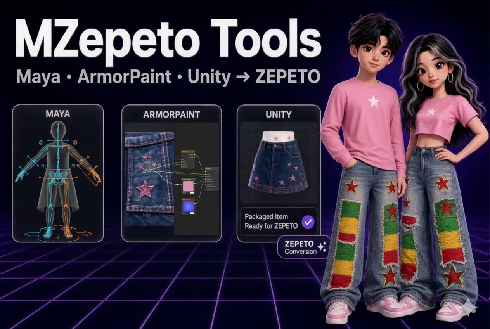
MZepeto is the Maya edition of the BZepeto Blender add-on: the same panels, the same buttons and the same ZEPETO checks, inside Maya. Items go to Unity through the same Unity package as BZepeto, and textures are painted in the same ArmorPaint.
The red boxes in the pictures are what to click, in the order of their numbers.
| Maya | Autodesk Maya 2027 (Windows, 64-bit) |
| Unity | A ZEPETO Studio project, Unity 2020.3.9f1 — see Unity Package |
| ZEPETO base character | creatorBaseSet_zepeto.fbx from ZEPETO's creator resources — it is ZEPETO's file and is not included |
1. What you downloaded
From Gumroad you get one file, MZepeto_<version>.zip. Unzip it; the MZepeto_<version> folder holds:
| File | What it is | Install |
|---|---|---|
mzepeto_maya-<version>.zip |
The Maya plug-in | Step 2 below |
com.bzepeto.unity2020-<version>.tgz |
The Unity package for ZEPETO Studio (Unity 2020.3.9) — the same file BZepeto ships | Unity page, step 1 |
BZepeto_ArmorPaint_<version>_win64.zip |
ArmorPaint with the BZepeto plug-ins — the same file BZepeto ships | ArmorPaint page, step 1 |
SHA256SUMS.txt |
Checksums of the files above | — |
If you already use BZepeto, the Unity package and ArmorPaint are the same and need no second install.
2. Install
- Unzip
mzepeto_maya-<version>.zipand move theMZepetofolder inside it to a place it can stay — e.g.C:\MZepeto - Start Maya 2027
- Drag
install.melfrom theMZepetofolder into the Maya viewport - Done. The MZepeto menu ① appears in the menu bar and an MZepeto shelf tab ② on the shelf, and from now on the plug-in loads every time Maya starts
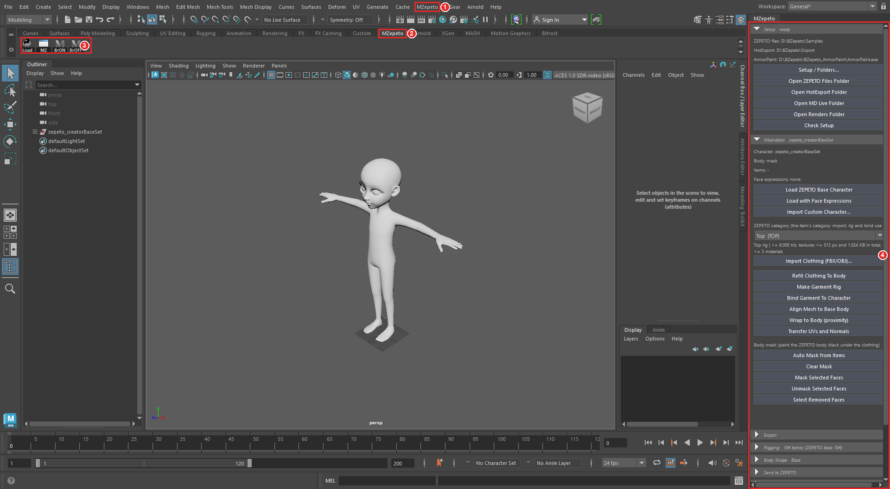
① MZepeto menu ② MZepeto shelf tab ③ Shelf buttons ④ The MZepeto panel (docked on the right)
Keep the folder path in English letters
Maya cannot load a plug-in from a path containing non-English characters (Korean, accented letters …). Keep the
folder somewhere like C:\MZepeto or D:\Tools\MZepeto — letters and digits only. The installer notices such a
path, stops and tells you why. (A Maya preferences folder under a localized Documents is fine.)
Shelf buttons ③
| Button | What it does |
|---|---|
| Load | Loads the plug-in (if it did not load by itself) |
| MZ | Opens the MZepeto panel |
| BrON / BrOFF | Starts / stops the Unity live bridge |
Maya's security prompt — when Maya 2027 reads the plug-in for the first time and asks whether to trust it, click Allow. If it is denied, the MZepeto menu does not appear.
What the installer does — it writes one file, MZepeto.mod, into Maya's modules folder, pointing at your
MZepeto folder. Nothing is copied. So:
- Moved the folder? Drag the
install.melfrom its new place in again - Updating: unzip the new version over the same folder (or into a new folder and drag its
install.melin), then restart Maya - Uninstalling: run this in the Script Editor's Python tab, then delete the MZepeto folder
import mzepeto.install; mzepeto.install.uninstall()
3. First-time setup (Setup)
The Blender add-on keeps these settings on its preferences page; Maya has no such page, so MZepeto > Setup / Folders... opens the same settings (also the first button of the panel's Setup section). Save them once and every button uses these paths — no file dialogs.
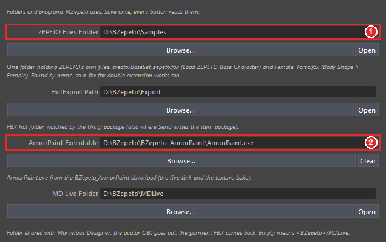
- ZEPETO Files Folder ① — the one folder that holds ZEPETO's files. Put ZEPETO's
creatorBaseSet_zepeto.fbx(the base character) andFemale_Torso.fbx(the female reference for Body Shape > Female) there. Files are found by name, so a downloadedFemale_Torso.fbx.fbxworks too - ArmorPaint Executable ② —
ArmorPaint.exein the folder you unzipped ArmorPaint to (ArmorPaint install) - Leave the other folders empty to use the defaults (table below). The small text under each field says what it is for. Browse... picks a folder, Open shows it in Explorer
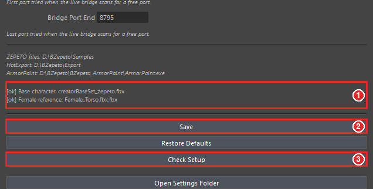
- At the bottom, ① shows whether both ZEPETO files were found:
[ok](found) /[--](missing) - Save ② stores the settings. Check Setup ③ checks every path and writes the result to the Script Editor
| Setting | When left empty | Used by |
|---|---|---|
| ZEPETO Files Folder | %USERPROFILE%\BZepeto\Samples |
Load ZEPETO Base Character, Body Shape > Female |
| HotExport Path | %USERPROFILE%\BZepeto\HotExport |
Send to Unity, Export FBX, the ArmorPaint live link |
| ArmorPaint Executable | — | Paint in ArmorPaint, Pull Textures |
| MD Live Folder | %USERPROFILE%\BZepeto\MDLive |
MD Live |
| Renders Folder | %USERPROFILE%\BZepeto\Renders |
Studio Render |
| Body Shape Presets | %USERPROFILE%\BZepeto\Presets\BodyShape |
Save / Load Body Shape Preset |
| Bridge Port Start / End | 8765 / 8795 | The Unity live bridge |
The settings file is the same one BZepeto uses, %USERPROFILE%\BZepeto\settings.json. HotExport is the folder the
Unity package watches, so with the default there is nothing to set up on the Unity side.
4. The MZepeto panel
Blender shows the add-on in the 3D view's sidebar tab (N); Maya has no such sidebar, so the same panels are drawn in one dockable panel. Open it with MZepeto > Open MZepeto Window or the shelf's MZ button.
- It opens floating the first time. Drag its title tab to an edge of Maya's window (the right side, for example) to dock it, or onto the Channel Box / Attribute Editor to join them as a tab — just like Maya's own panels
- Maya remembers where you docked it and opens it there next time. The Setup window docks the same way
- The panel has one folding section per Blender panel: Setup, Wearables, Export, Rigging, Body Shape, Send to ZEPETO, Review Tools, Studio Render, ZEPETO Playground, ArmorPaint, MD Live. Fold one with ▸/▾ on its header — a folded header still shows its key state (character name, bone count, body type …)
- Docked narrow, the buttons shrink to fit. Hover a cut-off line to read all of it
Every button is also in the MZepeto menu under the same name (Character, Export, Rigging, Weights, Body Shape, Send to ZEPETO, Review, Studio Render, Playground, ArmorPaint, MD Live, Setup). Click a menu's dashed line to tear it off as a floating menu.
5. Base character and clothing (Wearables)
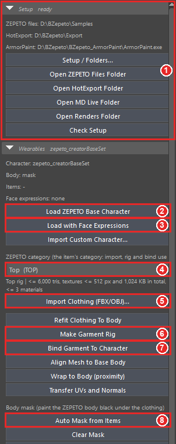
① The Setup section — the paths in use and a button to open each folder. ready on its header means the ZEPETO
files were found.
- Load ZEPETO Base Character ② — loads ZEPETO's base character (104 bones, 108.65 cm tall, body mesh
mask) - Making headwear or a mask? Use Load with Face Expressions ③ instead — the base comes with ZEPETO's 249 face expressions (section 10)
- Pick the item type in ZEPETO category ④ (Top, Skirt, Hair …). The line below shows the rig and limits of
that category — e.g.
Top rig | <= 6,000 tris, textures <= 512 px and 1,024 KB in total, <= 3 materials - Import Clothing (FBX/OBJ)... ⑤ — imports a clothing file and attaches it to the character as that category
- Make Garment Rig ⑥ → Bind Garment To Character ⑦ — weights the garment and binds it to the character. The garment stays selected afterwards, so the next button can be pressed right away
- Auto Mask from Items ⑧ — paints the body black under the items (ZEPETO hides those parts)
There is one category in the panel: the Wearables and Send to ZEPETO drop-downs follow each other. Make Garment Rig records the chosen category on the mesh; an item that is already rigged keeps its own (run Make Garment Rig again to change it).
Other buttons:
| Button | What it does |
|---|---|
| Import Custom Character... | Loads your own ZEPETO character FBX instead of the base |
| Refit Clothing To Body | Fits the worn clothing to the body again after a body-shape change |
| Align Mesh to Base Body | Moves the selected mesh's points onto the character's body |
| Wrap to Body (proximity) | Attaches the mesh to the body with Maya's proximity wrap (topology kept, follows the body) |
| Transfer UVs and Normals | Copies UVs, normals and vertex colours from another mesh |
| Clear Mask / Mask Selected Faces / Unmask Selected Faces | Clear the mask, hide or restore the selected faces |
| Select Removed Faces | Selects the faces ZEPETO will actually remove |
The character looks huge? The base is built in centimetres. With a scene in metres, 108.65 cm becomes 108.65 m. Set Windows > Settings/Preferences > Preferences > Settings > Working Units > Linear to centimeter. Load warns when the scene unit is not centimetres.
6. Rigging
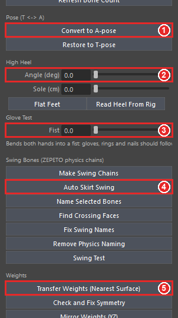
- Bone count — the section header compares your rig with ZEPETO's base skeleton (104 bones); Refresh Bone Count counts again
- Convert to A-pose ① / Restore to T-pose — switch between T and A pose
- High Heel ② — Angle (deg) lifts the heel, Sole (cm) is the platform under the toes. The toes stay on the floor and the body rises. Only a Shoes item carries ZEPETO's heel data when sent. Flat Feet turns the heel off, Read Heel From Rig reads the values of an imported high-heel item into the sliders
- Glove Test > Fist ③ — closes both hands into a fist, to see that gloves, rings and nails follow the fingers. It does not affect the export
Swing bones (hair, skirts, ribbons)
- Auto Skirt Swing ④ — adds swing bones to a skirt, dress or long coat in one step. Set the category to Skirt, Dress or Outerwear and press Make Garment Rig → Bind → Auto Skirt Swing
- Make Swing Chains — builds chains along the edge rows you picked
- Bones are named in ZEPETO's SDK format
<joint>_physics_<drag>_<angle drag>_<restore drag>. Name Selected Bones names the selected bones this way, Remove Physics Naming removes it - Fix Swing Names — fixes swing bones named in the old format (with spaces)
- Find Crossing Faces — selects faces where the garment cuts through itself
- Swing Test — swings every chain and reports how far it really moves (Maya only)
Weights
| Button | What it does |
|---|---|
| Transfer Weights (Nearest Surface) ⑤ | Copies the body's weights to the selected garment |
| Check and Fix Symmetry | Finds and fixes left/right weight mismatches |
| Mirror Weights (YZ) | Maya's weight mirror across the YZ plane — Maya only |
| Fix Scale Bones | Moves weights onto the _scale body-size bones, as ZEPETO's rigging rules require — Maya only |
| Limit Influences to 4 | At most 4 bones per vertex |
| Scan / Delete Unused Bones | Finds and deletes unused bones (ZEPETO's required bones are protected) |
7. Body Shape
- Body Type — Base / Female / Male / Imported. Rebuild Bust from Reference FBX rebuilds the female bust from
Female_Torso.fbx; Import Body from Character takes the bone layout and body of another character - Eight sliders — height, shoulder width, chest, waist, pelvis, leg length, neck length, head size
- Store Base Snapshot stores the current state as the base; Build Body Shape Delta applies the sliders to the rig and builds the body-shape difference
- Save / Load Body Shape Preset — save or load the slider values as JSON (Setup's Body Shape Presets folder)
8. Export
- Run Export Checks — runs the pre-export checklist. The result appears under the buttons (Not checked yet at first) and in the Script Editor
- Check and Export FBX — checks, then exports the FBX with ZEPETO's settings into the HotExport folder
- Fit to Triangle Budget — reduces the selected mesh to its category's triangle limit (Maya's polyReduce, Maya only)
9. Send to ZEPETO
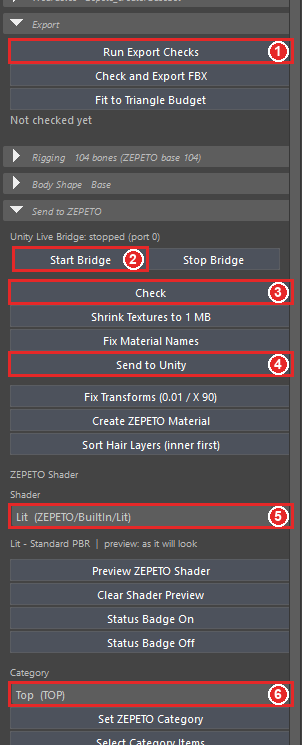
① Run Export Checks (Export section) ② Start Bridge ③ Check ④ Send to Unity ⑤ ZEPETO Shader ⑥ Category
- Select the item and pick its Category ⑥ (the same one as in Wearables)
- Check ③ — checks the item against its category's limits and the ZEPETO converter's rules. The result appears in the Script Editor and at the bottom of the viewport
- Fix what it reports with the buttons below:
- Shrink Textures to 1 MB — when the textures total more than 1 MB, makes smaller copies and connects them (the originals stay)
- Fix Material Names — renames materials to ZEPETO's rule (
<item>_shd) - Fix Transforms (0.01 / X 90) — sets the scale and rotation ZEPETO items use
- Create ZEPETO Material — gives the item a ZEPETO BuiltIn material
- Sort Hair Layers (inner first) — orders hair cards so the inner ones draw first
- Send to Unity ④ — checks, writes the FBX + mask + PNG textures + a manifest, and sends the item to Unity
Unity live bridge ② — Start Bridge connects straight to Unity; the line above shows its state and port. Without the bridge, Send still reaches Unity through the HotExport folder (watched by the Unity package).
ZEPETO Shader ⑤ — picks the item's ZEPETO shader (Lit, Cloth, Fur, HairAlpha, Sparkle, Iridescence, Prism, CustomEnv, Toon, Detail Normal). The shader goes to Unity with the item; the line below lists the maps it reads.
- Preview ZEPETO Shader — builds a viewport preview material from the item's own maps (effects such as Fur, Sparkle and Toon are approximations; Unity and the ZEPETO preview show the real look)
- Clear Shader Preview — puts the item's own material back exactly
- Status Badge On / Off — keeps a line on the viewport with the selected item's triangles against its budget, materials, texture KB and bones (Maya only)
Set ZEPETO Category records the category on the selected items; Select Category Items selects every item of that category.
10. Review Tools and Studio Render
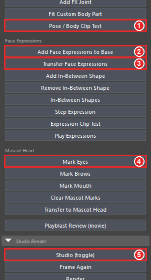
- Pose / Body Clip Test ① — puts the dressed character through ZEPETO's preview poses on every body type and deformation and finds where skin pokes through the item
- Head Size Test (the smallest and largest head the app uses), Mark Selected as Front Hair (baby hairs drawn in front), Add FX Joint (a joint for an effect), Fit Custom Body Part (female / custom torso)
Face expressions
- Add Face Expressions to Base ② — adds the 249 expressions to the loaded base
- Transfer Face Expressions ③ — select a face item (hair, mask) and press it: the item gets expressions that follow the face right under it
- Add / Remove In-Between Shape, In-Between Shapes — add, remove and list the in-between expressions ZEPETO's guide allows (eyeBlink and its related expressions)
- Step Expression shows the expressions one by one, Expression Clip Test checks for every expression whether the face cuts through the item and whether the item follows, and Play Expressions turns all of them into a timeline animation
Expression names in Maya
A Maya blend shape name cannot contain a dot, so Blender's zepeto.jawOpen is zepeto_jawOpen in Maya. The checks
and buttons understand both. An FBX exported from Maya, however, names the shape zepeto_jawOpen, so a face item
that must carry zepeto.jawOpen exactly should be exported from Blender (BZepeto).
Mascot head expressions — select the head, pick its eye vertices in component mode and press Mark Eyes ④, then the same with Mark Brows and Mark Mouth. Transfer to Mascot Head then fits each part to the same part of the face, scaled to its size, and bakes the expressions. Clear Mascot Marks removes the marks.
Playblast Review (movie) — records the timeline as a movie (swings and expressions are hard to judge from a still).
Studio Render ⑤ — Studio (toggle) sets up a backdrop, soft lights and a portrait camera around the character; Render saves a PNG to the Renders folder. After a pose, body or item change press Frame Again; Back to Original (body shape) sets every body-shape slider back to 0. Pressing Studio (toggle) again removes everything the studio added.
11. ZEPETO Playground
Recreates ZEPETO Studio's play-mode menu in Maya — 10 animations, camera, body type, 13 deformations and space — so you can check an item before it goes to Unity.
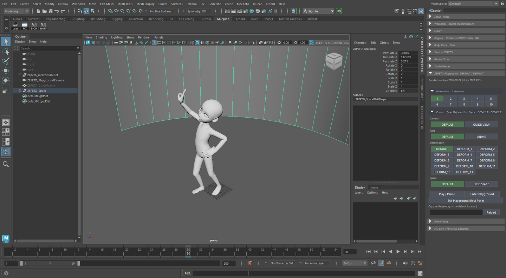
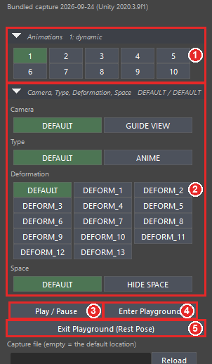
- Click an animation number under Animations ①
- Under Camera, Type, Deformation, Space ②, pick the camera (DEFAULT / GUIDE VIEW), body type (DEFAULT / ANIME), deformation and space. The picked entries are green
- Enter Playground ④ — sets up the camera, the guide frame and the round wall, and puts the animation on the character
- Play / Pause ③ — play and pause
-
Exit Playground (Rest Pose) ⑤ — removes the keys and puts the character back in its rest pose. Export uses the rest pose, so leave the playground before editing the character
-
The playground works right away with the bundled capture. To use a capture from your own ZEPETO Studio project, run the playground scene in Play mode in Unity, click BZepeto > Capture Playground For Blender, put that file in the Capture file field and press Reload
- Playback speed — entering puts the scene on the clip's frame rate (24 or 30 fps) and, when Maya's playback is uncapped (Play every frame with Max Free — Maya 2027's default), caps it at real time, so the animation plays at its original speed. Exiting gives the scene its own frame rate and playback setting back
12. ArmorPaint and MD Live
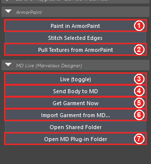
ArmorPaint
- Select the item and press Paint in ArmorPaint ① — ArmorPaint opens with the item loaded (needs the ArmorPaint Executable in Setup)
- After painting, Pull Textures from ArmorPaint ② brings the textures back and connects them to the item
- Stitch Selected Edges — draws stitches along the selected edges as an ArmorPaint layer
Using ArmorPaint itself: ArmorPaint.
MD Live (Marvelous Designer) — send the ZEPETO character to Marvelous Designer, make the garment there, and get it back already worn.
Once: press Open MD Plug-in Folder ⑦ and register bz_live.py in Marvelous Designer with Plug-in ▸ Plug-in
Manager ▸ Add (bz_load_avatar and bz_send_garment too, if you like).
- Live (toggle) ③ — while on, the body is sent again whenever the character changes, and every garment
Marvelous Designer sends back is rigged as the category above and worn (replacing the previous live garment). Click
bz_liveonce in Marvelous Designer's Plug-in menu - Send Body to MD ④ — writes the body in its current pose and shape to the shared folder (load it in Marvelous
Designer with
bz_load_avatar) - Get Garment Now ⑤ — gets the current garment from Marvelous Designer right away; says so if
bz_liveis not running there - Import Garment from MD... ⑥ — imports and dresses a garment saved with
bz_send_garment
Using it together with BZepeto
Marvelous Designer reads the settings of the folder registered in its Plug-in Manager. The Blender add-on and MZepeto each have their own plug-in folder, so if you use both, set the same MD Live Folder in both. If they differ, MZepeto follows the folder Marvelous Designer really uses and says so in one line.
Units: Marvelous Designer works in millimetres and a Maya scene in centimetres; MZepeto reads the scene unit and converts by itself.
13. About
MZepeto > About / Version shows the version, author, license, Maya and Python versions, the plug-in state, the install folder and where the settings file is. Open Install Folder and Open Settings Folder open them. Include what this window shows when you ask for help.
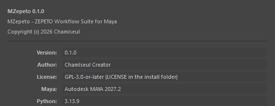
14. Using it from Python
Every button is also a Maya command (105 of them) — e.g. mzepeto_loadBaseCharacter, mzepeto_sendItem,
mzepeto_autoMask. In a script:
import mzepeto.api as api
api.load_base_character() # the base character
api.load_base_character(face_expressions=True) # with its 249 expressions
api.import_clothing() # import a garment
api.run_checks() # ZEPETO checks (prints the report)
api.send_item("TOP") # check + export + send to Unity
api.bridge_start() # the Unity live bridge
To open the panel from code: from mzepeto.ui import window; window.show().
15. Troubleshooting
| Problem | Fix |
|---|---|
Nothing happens (or an error) when dropping install.mel |
Check for non-English characters in the MZepeto folder path (step 2). If you denied Maya's security prompt, restart Maya and choose Allow |
| The MZepeto menu is gone | In Windows > Settings/Preferences > Plug-in Manager, tick Loaded and Auto load for mzepeto_plugin.py, or press the shelf's Load |
| Load ZEPETO Base Character opens a file dialog | creatorBaseSet_zepeto.fbx is not in Setup's ZEPETO Files Folder; check the [ok] / [--] lines at the bottom of Setup |
| The character looks huge | The scene unit is metres — set Working Units > Linear to centimeter (section 5) |
| The playground animation plays far too fast | Enter Playground now caps playback at real time. To set it yourself: Preferences > Time Slider > Playback speed Real-time, or Max Playback Speed Real-time |
| The panel is off screen or lost | Press MZepeto > Open MZepeto Window again — it comes to the front |
| Get Garment Now does nothing | Check that bz_live is running in Marvelous Designer and that MD Live Folder is the folder of the MD plug-in you registered (section 12) |
More answers are in Help & FAQ (Unity, ArmorPaint and ZEPETO review topics are the same as for BZepeto).
© 2026 Chamiseul